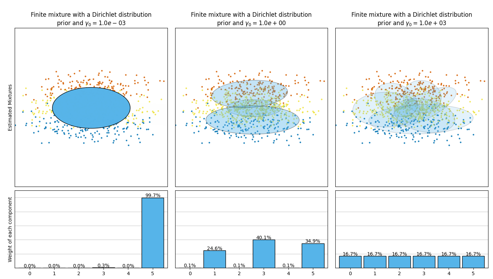
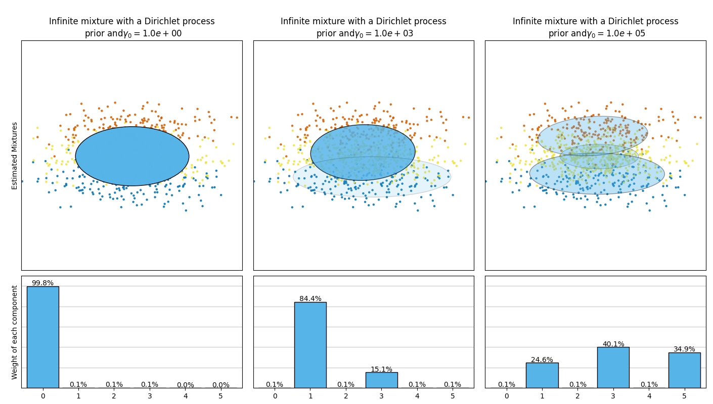

Note
Go to the end to download the full example code or to run this example in your browser via Binder
Concentration Prior Type Analysis of Variation Bayesian Gaussian Mixture¶
This example plots the ellipsoids obtained from a toy dataset (mixture of three
Gaussians) fitted by the BayesianGaussianMixture class models with a
Dirichlet distribution prior
(weight_concentration_prior_type='dirichlet_distribution') and a Dirichlet
process prior (weight_concentration_prior_type='dirichlet_process'). On
each figure, we plot the results for three different values of the weight
concentration prior.
The BayesianGaussianMixture class can adapt its number of mixture
components automatically. The parameter weight_concentration_prior has a
direct link with the resulting number of components with non-zero weights.
Specifying a low value for the concentration prior will make the model put most
of the weight on few components set the remaining components weights very close
to zero. High values of the concentration prior will allow a larger number of
components to be active in the mixture.
The Dirichlet process prior allows to define an infinite number of components and automatically selects the correct number of components: it activates a component only if it is necessary.
On the contrary the classical finite mixture model with a Dirichlet distribution prior will favor more uniformly weighted components and therefore tends to divide natural clusters into unnecessary sub-components.
- 
- 
# Author: Thierry Guillemot <thierry.guillemot.work@gmail.com>
# License: BSD 3 clause
import matplotlib as mpl
import matplotlib.gridspec as gridspec
import matplotlib.pyplot as plt
import numpy as np
from sklearn.mixture import BayesianGaussianMixture
def plot_ellipses(ax, weights, means, covars):
for n in range(means.shape[0]):
eig_vals, eig_vecs = np.linalg.eigh(covars[n])
unit_eig_vec = eig_vecs[0] / np.linalg.norm(eig_vecs[0])
angle = np.arctan2(unit_eig_vec[1], unit_eig_vec[0])
# Ellipse needs degrees
angle = 180 * angle / np.pi
# eigenvector normalization
eig_vals = 2 * np.sqrt(2) * np.sqrt(eig_vals)
ell = mpl.patches.Ellipse(
means[n], eig_vals[0], eig_vals[1], angle=180 + angle, edgecolor="black"
)
ell.set_clip_box(ax.bbox)
ell.set_alpha(weights[n])
ell.set_facecolor("#56B4E9")
ax.add_artist(ell)
def plot_results(ax1, ax2, estimator, X, y, title, plot_title=False):
ax1.set_title(title)
ax1.scatter(X[:, 0], X[:, 1], s=5, marker="o", color=colors[y], alpha=0.8)
ax1.set_xlim(-2.0, 2.0)
ax1.set_ylim(-3.0, 3.0)
ax1.set_xticks(())
ax1.set_yticks(())
plot_ellipses(ax1, estimator.weights_, estimator.means_, estimator.covariances_)
ax2.get_xaxis().set_tick_params(direction="out")
ax2.yaxis.grid(True, alpha=0.7)
for k, w in enumerate(estimator.weights_):
ax2.bar(
k,
w,
width=0.9,
color="#56B4E9",
zorder=3,
align="center",
edgecolor="black",
)
ax2.text(k, w + 0.007, "%.1f%%" % (w * 100.0), horizontalalignment="center")
ax2.set_xlim(-0.6, 2 * n_components - 0.4)
ax2.set_ylim(0.0, 1.1)
ax2.tick_params(axis="y", which="both", left=False, right=False, labelleft=False)
ax2.tick_params(axis="x", which="both", top=False)
if plot_title:
ax1.set_ylabel("Estimated Mixtures")
ax2.set_ylabel("Weight of each component")
# Parameters of the dataset
random_state, n_components, n_features = 2, 3, 2
colors = np.array(["#0072B2", "#F0E442", "#D55E00"])
covars = np.array(
[[[0.7, 0.0], [0.0, 0.1]], [[0.5, 0.0], [0.0, 0.1]], [[0.5, 0.0], [0.0, 0.1]]]
)
samples = np.array([200, 500, 200])
means = np.array([[0.0, -0.70], [0.0, 0.0], [0.0, 0.70]])
# mean_precision_prior= 0.8 to minimize the influence of the prior
estimators = [
(
"Finite mixture with a Dirichlet distribution\nprior and " r"$\gamma_0=$",
BayesianGaussianMixture(
weight_concentration_prior_type="dirichlet_distribution",
n_components=2 * n_components,
reg_covar=0,
init_params="random",
max_iter=1500,
mean_precision_prior=0.8,
random_state=random_state,
),
[0.001, 1, 1000],
),
(
"Infinite mixture with a Dirichlet process\n prior and" r"$\gamma_0=$",
BayesianGaussianMixture(
weight_concentration_prior_type="dirichlet_process",
n_components=2 * n_components,
reg_covar=0,
init_params="random",
max_iter=1500,
mean_precision_prior=0.8,
random_state=random_state,
),
[1, 1000, 100000],
),
]
# Generate data
rng = np.random.RandomState(random_state)
X = np.vstack(
[
rng.multivariate_normal(means[j], covars[j], samples[j])
for j in range(n_components)
]
)
y = np.concatenate([np.full(samples[j], j, dtype=int) for j in range(n_components)])
# Plot results in two different figures
for title, estimator, concentrations_prior in estimators:
plt.figure(figsize=(4.7 * 3, 8))
plt.subplots_adjust(
bottom=0.04, top=0.90, hspace=0.05, wspace=0.05, left=0.03, right=0.99
)
gs = gridspec.GridSpec(3, len(concentrations_prior))
for k, concentration in enumerate(concentrations_prior):
estimator.weight_concentration_prior = concentration
estimator.fit(X)
plot_results(
plt.subplot(gs[0:2, k]),
plt.subplot(gs[2, k]),
estimator,
X,
y,
r"%s$%.1e$" % (title, concentration),
plot_title=k == 0,
)
plt.show()
Total running time of the script: (0 minutes 4.496 seconds)